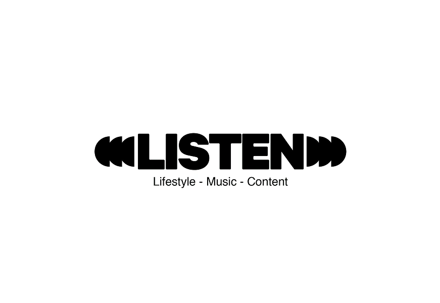
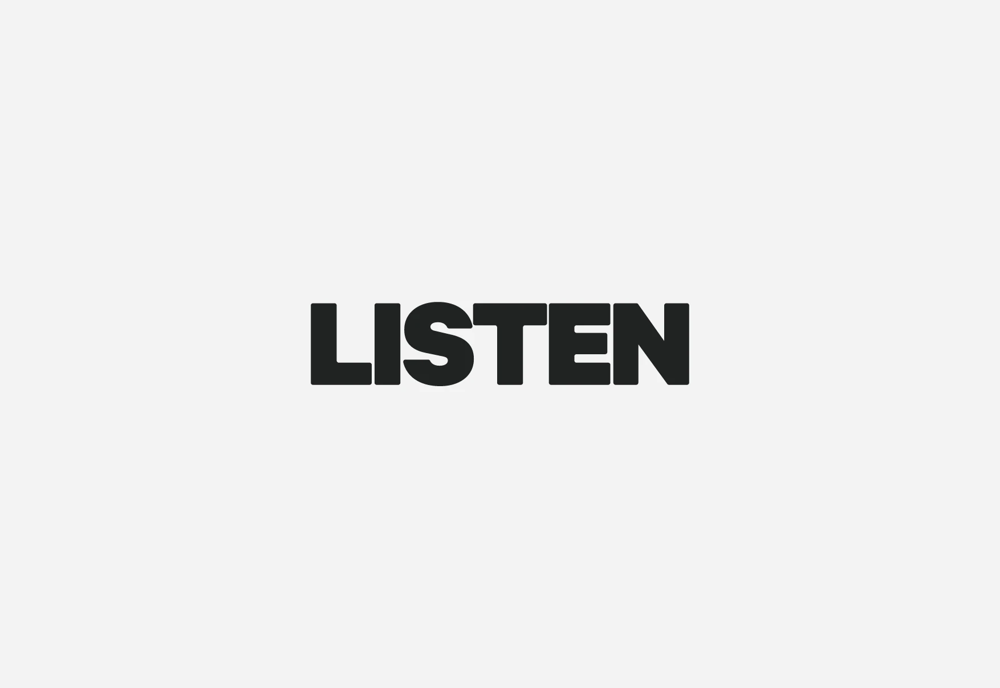
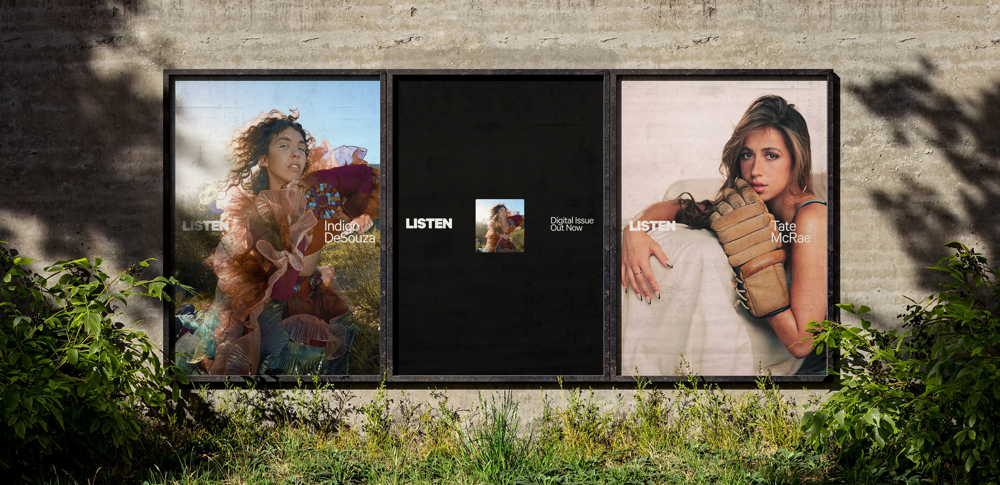

Listen Mag
How do you give a music magazine a
motion identity that puts the artist first?
LISTEN is a passion project from my friend Chris, a PR consultant in the music industry. Chris built it into a home for up-and-coming artists, and I rebranded it with him in 2021. In 2025 we came back, now with thousands of followers and features on Lolo Zouaï, Sam Gellaitry, Anna of the North, Audrey Nuna, and more. This time the job was motion. The idea was simple: the artist comes first. Instead of making their videos and images fit inside our identity, the identity works with their visuals.


The team mostly used just the wordmark, so I simplified the logo to match and added slight off-whites and blacks for variety without pulling focus from the artists. For the motion, I tried pages turning and reveals that felt like a fast forward. Neither gave me a container for content. The crossbar of the T did. It opens into a frame, and the scaling and rotation repeat easily at any size.
The T crossbar opens into the frame, and that frame holds everything else in the system. Three rules keep it consistent: the frame sets the container, layouts stay minimal so the artist's visuals do the work, and color stays near black and off-white so the artist's color carries.
Must Listen, the weekly series spotlighting the editorial team's favorite music and visuals, rolls out as a reel and as a grid post. Q+A posts pull quotes from the site's articles to get people to read them. BTS templates roll out with each new issue, and the same visuals carry onto the website.
Static posters accompany each new issue rollout.

The same system at billboard scale.